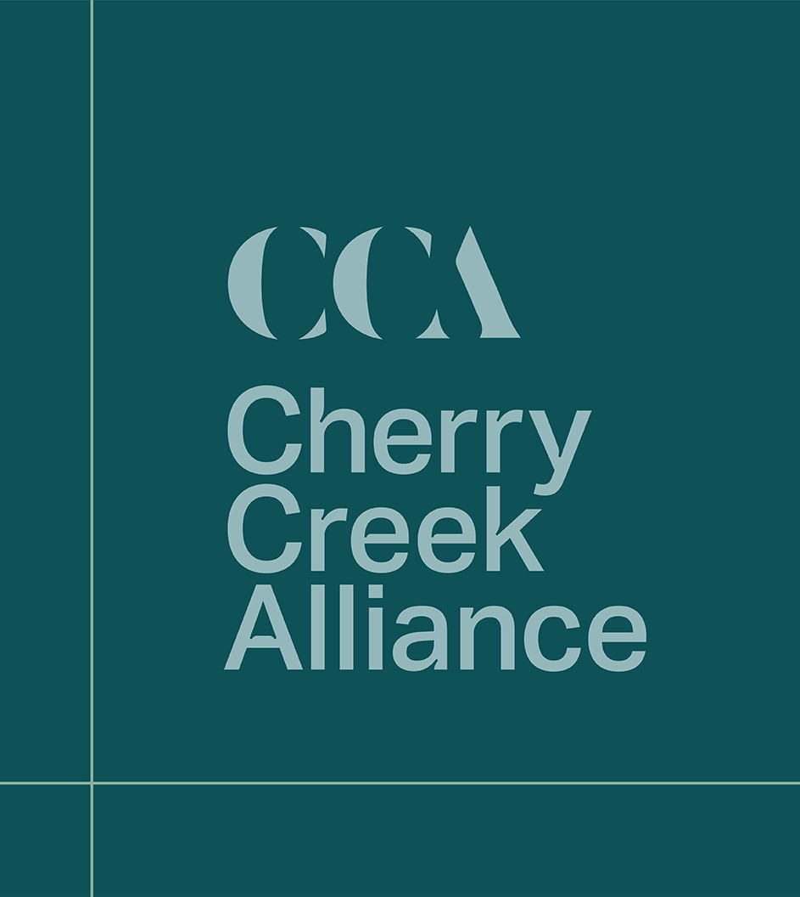

Our work / Cherry Creek AllianceCherry Creek
BRAND IDENTITY
Cherry Creek
Alliance.
A shared identity for a united business community.

THE BRIEF
A collective
voice.
Cherry Creek Alliance needed an identity that reflected the district’s energy and its credible business positioning.
Trace explored the relationship between the alliance’s constituent organisations and the community they represent.
THE DESIGN RESPONSE
Inspired by
the place.
The cherry tree informed the colour palette. The precinct map informed a grid that connected the visual language across collateral.
- Logo development
- A distinctive visual language
- Branding collateral
THE ROLLOUT
A consistent
expression.
The published case study reports a launch and rollout across communications collateral.
View the full project for the identity and applications.
View the original project ↗